Canonical flow diagrams, state machines, and structural maps covering the complete ORP specification surface.
The four-layer signal processing model from raw observation through governed output.
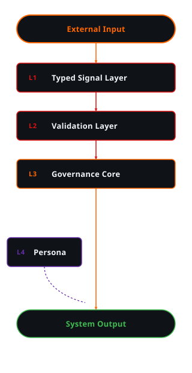
Continuous signal-to-output cycle with recalibration feeding back into signal intake.
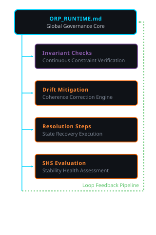
The complete ORP pipeline from raw external input through provenance-sealed output state.
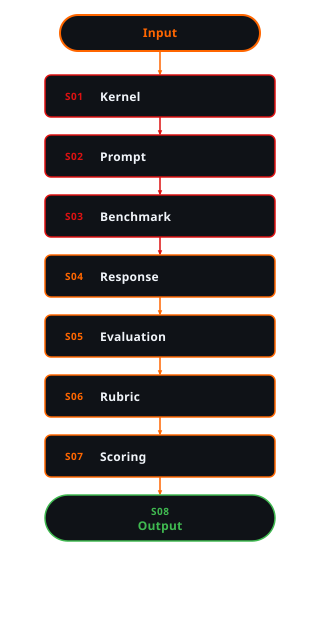
Governed L3 output passes through the persona transform before final rendering.
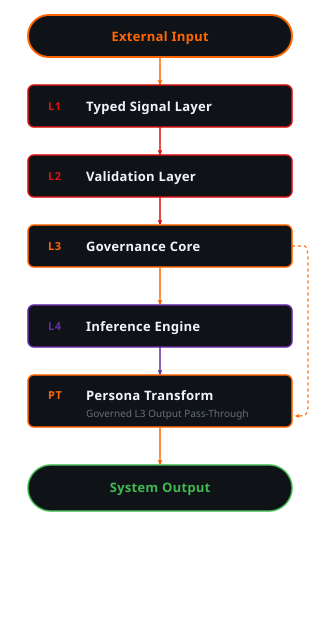
L4 receives only a read-only snapshot; it cannot modify L3 or directly access L1 signals.
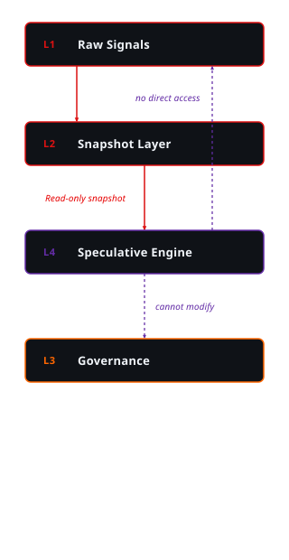
All four runtime profiles branch from the shared ORP Core — each inherits governance invariants.
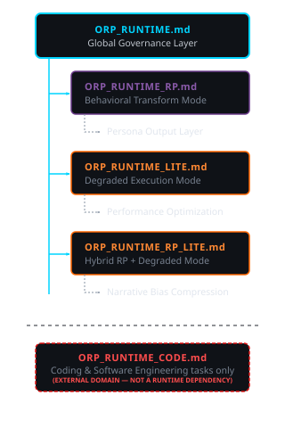
Variants ordered by decreasing resource overhead — left is heaviest, right is lightest.
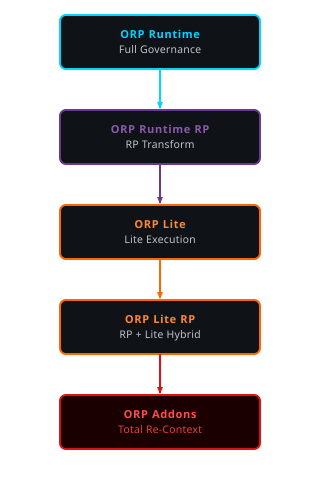
No variant drops provenance tracking or SHS state management — invariants propagate to all profiles.
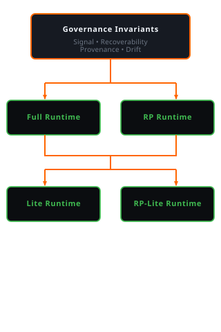
Historical signal vectors feed variance computation, producing the σ² metric that drives SHS transitions.
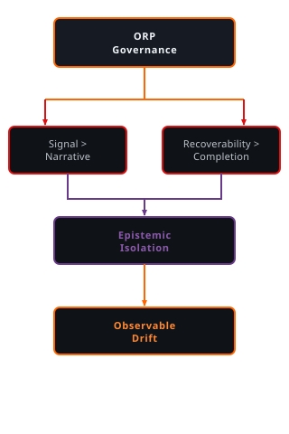
Stability Health State transitions — from nominal GREEN through terminal BLACK failure state.
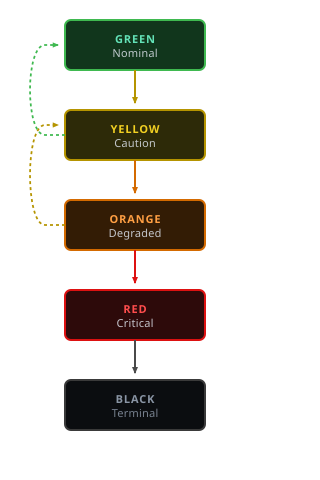
Context flows through layers without summarization; the chain is sealed at Step 08 and cannot be retroactively modified.
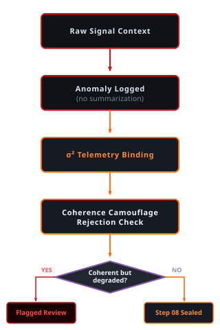
Signal integrity and recoverability always supersede presentation fluency — governance is non-negotiable at every level.
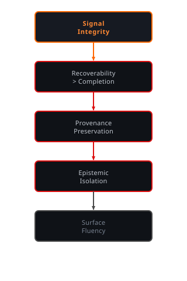
Non-negotiable constraints that all runtime variants, evaluation schemas, and recovery protocols must preserve.
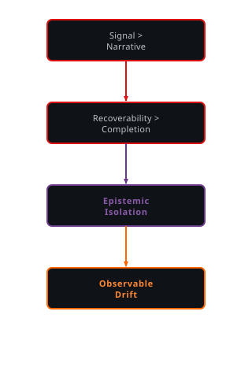
Modern web development dependency bloat versus ORP's zero-dependency deterministic governance approach.
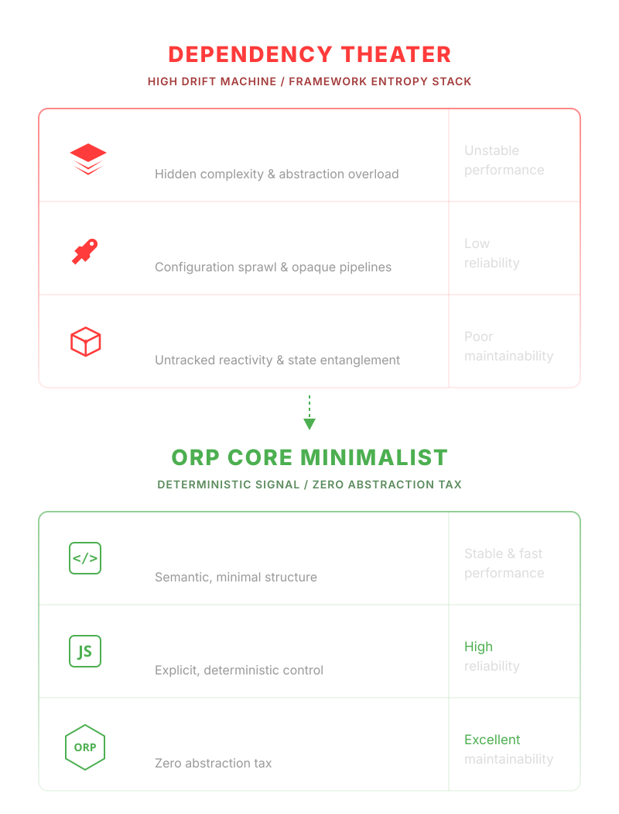
Access the complete engineering specification, evaluation layers, drift recovery protocols, and layer definitions.